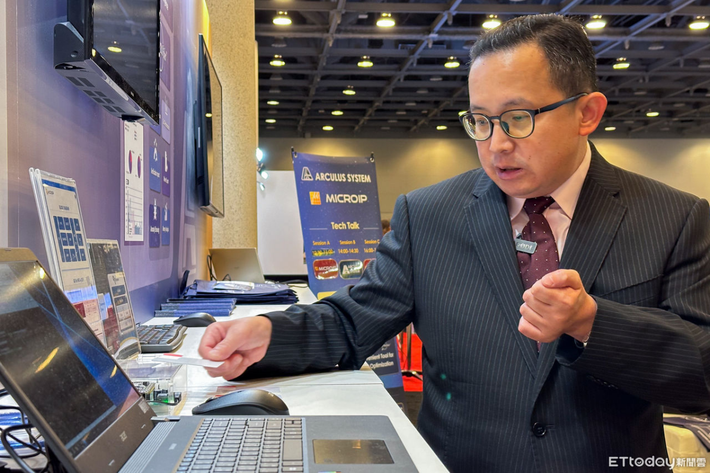

<?xml version="1.0" encoding="UTF-8"?><rss version="2.0"
	xmlns:content="http://purl.org/rss/1.0/modules/content/"
	xmlns:wfw="http://wellformedweb.org/CommentAPI/"
	xmlns:dc="http://purl.org/dc/elements/1.1/"
	xmlns:atom="http://www.w3.org/2005/Atom"
	xmlns:sy="http://purl.org/rss/1.0/modules/syndication/"
	xmlns:slash="http://purl.org/rss/1.0/modules/slash/"
	>

<channel>
	<title>Arculus System</title>
	<atom:link href="index.html" rel="self" type="application/rss+xml" />
	<link>../index.html</link>
	<description></description>
	<lastbuilddate>Wed, 26 Nov 2025 07:17:58 +0000</lastbuilddate>
	<language>zh-TW</language>
	<sy:updateperiod>
	每小时	</sy:updateperiod>
	<sy:updatefrequency>
	1	</sy:updatefrequency>
	<generator>https://wordpress.org/?v=6.9.1</generator>

<image>
	<url>../../wp-content/uploads/2024/04/cropped-ARCULUS-SYSTEM_LOGO%E6%95%B4%E9%AB%94-32x32.png</url>
	<title>Arculus System</title>
	<link>../index.html</link>
	<width>32</width>
	<height>32</height>
</image> 
	<item>
		<title>Arculus System Aims for Global AI Chip Market Leadership with Innovative EDA Solutions and Upcoming US IPO</title>
		<link>../arculus-system-aims-for-global-ai-chip-market-leadership-with-innovative-eda-solutions-and-upcoming-us-ipo/index.html</link>
		
		<dc:creator><![CDATA[sales]]></dc:creator>
		<pubdate>Mon, 05 Aug 2024 09:30:14 +0000</pubdate>
				<category><![CDATA[未分類]]></category>
		<guid ispermalink="false">../../index.html</guid>

					<description><![CDATA[全球AI晶片需求逐漸升高，台灣半導體供應鏈及概念股都成為關注的焦點。以新創之姿的Arculus System在美國正準備上市，運用EDA設計工具打入全球前三大晶片商，就連國際級晶片大廠都需要這家小公司的服務<span class="excerpt-hellip"> [...]</span>]]></description>
										<content:encoded><![CDATA[<p class="has-text-align-center"><strong>Arculus System董事長楊健盟接受《ETtoday新聞雲》採訪。（圖／記者楊絡懸攝）</strong></p>


<p>全球AI晶片需求逐漸升高，台灣半導體供應鏈及概念股都成為關注的焦點。以新創之姿的Arculus System在美國正準備上市，運用EDA設計工具打入全球前三大晶片商，就連國際級晶片大廠都需要這家小公司的服務。</p>


<p>從清大、南加大畢業，並取得紐約大學電機博士學位，楊健盟擁有在美國矽谷與台灣半導體大廠的服務經驗，看準EDA工具的發展潛力，毅然決然創立Arculus System新創公司，持續投入EDA的開發，目前除了具備5奈米製程晶片的架構基礎，更獲得國際大廠的青睞，逐步往先進製程前進。</p>


<p>科技界將EDA視為「晶片之母」，比起以往傳統架構設計的耗費心神，楊健盟團隊推出的EDA服務就是強調「自動化」，利用電腦軟體縮短複雜的半導體產品開發時間，同時在設計過程中，透過AI效能驗證、除錯，快速解決其中的問題。</p>


<p>詹姆斯-杨列举了公司的最新产品 iPROfiler为例。这项 EDA 服务利用人工智能功能全面验证架构设计，在整个数据库中快速评估哪种架构符合客户需求，并进一步定制优化。此外，它还能检测芯片的性能并跟踪芯片的后续状况，大大降低了芯片生产的时间和功耗成本，充分发挥了系统级芯片（SoC）的设计潜力。</p>


<p>這樣的成果，其實就是「軟硬體整合」的實力展現。楊健盟說，輝達（NVIDIA）能在AI市場上擁有強勁的競爭優勢，也是因為硬體加上軟體平台的整合，讓晶片工程師更方便導入相關應用；同樣道理，也能在Arculus System的EDA資源上看到，除了展開台灣強勁的積體電路設計，更能在海外幫助工程師打造更方便的EDA架構設計環境。</p>


<figure class="wp-block-image size-large"></figure>


<p class="has-text-align-center"><strong> ( 照片来源：ETtoday )</strong></p>


<p>事實上，楊健盟創業起初的構想是，台灣半導體產業有非常多優秀人才及研究資源，如何延續產業的優勢，矽智財（IP）就是核心價值。於是他與夥伴團隊將手上相關的IP專利放在平台上，就像創立IP商城（IP mall）一樣，透過平台讓相關企業購買所需IP，協助其他企業設計出自己想要的晶片，同時也幫助研發這些IP專利的工程師獲利。</p>


<p>「有些IP專利或許已經過時、也沒人在乎了，但還是有一些企業需要，因而可以發揮剩餘價值。」楊健盟表示，當晶片改朝換代，相關專利技術就會被閒置，這個IP mall的概念就類似一種矽智財資料庫，當客戶找到合適的需求，就可以繼續將價值發揮得淋漓盡致。</p>


<p>楊健盟指出，AI世代不能沒有EDA，因為EDA服務主要有兩個層面，一是架構設計，二是效能分析，這些都涵蓋演算法去幫客戶快速找出問題、減少研發成本並大幅提升晶片開發的效率。</p>


<p>EDA除了強調自動化，更有資料庫的力量，導入AI演算法而設計出更多AI晶片，快速在市場上推出高品質產品，因此，楊健盟的新商業模式並不局限於EDA服務，更企圖委外一條龍的「設計服務」（design service），從規格、設計、製造，一路幫客戶完成晶片產品。</p>


<p>iPROfiler 的开发 在过去的两年中，EDA 的人工智能技术已经得到了业界的广泛认可。今年，杨俊进一步公开展示了EDA的人工智能能力。接下来，Arculus System将继续扩大订单版图，与更多国际巨头合作，并计划申请在美国上市。它能否跻身全球五大 EDA 公司之列，备受半导体行业瞩目。</p>


<p>新聞來源 ：<a href="https://finance.ettoday.net/news/2767659">https://finance.ettoday.net/news/2767659</a></p>]]></content:encoded>
					
		
		
			</item>
		<item>
		<title>EDA Revolution in the AI Wave: Breaking Traditional IC Design Boundaries</title>
		<link>../eda-revolution-in-the-ai-wave-breaking-traditional-ic-design-boundaries/index.html</link>
		
		<dc:creator><![CDATA[sales]]></dc:creator>
		<pubdate>Mon, 29 Jul 2024 08:58:51 +0000</pubdate>
				<category><![CDATA[未分類]]></category>
		<guid ispermalink="false">../../index.html</guid>

					<description><![CDATA[感谢東森新聞 (NewsEBC) 捕捉到我们在 DAC 2024 上的精彩瞬間！探索為什麼舊金山被稱為世界人工智慧之都！參加DAC，探索開放式人工智慧的影響、EDA 工具在人工智慧晶片設計中的關鍵作用，以及台灣的 Arculus Systems 如何在這一領域掀起波瀾<span class="excerpt-hellip"> [...]</span>]]></description>
										<content:encoded><![CDATA[<figure class="wp-block-video"><video height="720" style="aspect-ratio: 1280 / 720;" width="1280" controls src="../../wp-content/uploads/2024/07/%E3%80%90%E8%81%9A%E7%84%A6%E7%9C%9F%E7%9B%B8%E3%80%91EDA%E6%8A%80%E8%A1%93%E5%A5%A0%E5%AE%9AAI-%E6%99%B6%E7%89%87-%E5%8F%B0%E5%BB%A0%E8%B5%B4%E7%BE%8E%E6%90%B6%E5%B8%82-%E5%82%85%E5%AE%B6%E6%85%B6-%E6%9E%97%E5%A5%95%E5%8B%B3-%E8%88%8A%E9%87%91%E5%B1%B1%E5%A0%B1%E5%B0%8E%40newsebc-1-1.mp4"></video></figure>


<h2 class="wp-block-heading has-medium-font-size"><strong>AI浪潮中的EDA革命：打破傳統IC設計邊界</strong></h2>


<p>感谢東森新聞 (NewsEBC) 捕捉到我们在 DAC 2024 上的精彩瞬間！</p>


<p> 探索為什麼舊金山被稱為世界人工智慧之都！參加DAC，探索開放式人工智慧的影響、EDA 工具在人工智慧晶片設計中的關鍵作用，以及台灣的 Arculus Systems 如何在這一領域掀起波瀾。看看像西門子這樣的巨頭和 Arculus Systems 這樣的明日之星是如何在競爭激烈的市場中脫穎而出的。和我們一起見證人工智慧的未來！ </p>


<p>来自 newssebc (newsebc) 的原始連結： <a href="https://www.youtube.com/watch?v=n2jY5I9OExo">https://www.youtube.com/watch?v=n2jY5I9OExo</a></p>]]></content:encoded>
					
		
		<enclosure url="../../wp-content/uploads/2024/07/%E3%80%90%E8%81%9A%E7%84%A6%E7%9C%9F%E7%9B%B8%E3%80%91EDA%E6%8A%80%E8%A1%93%E5%A5%A0%E5%AE%9AAI-%E6%99%B6%E7%89%87-%E5%8F%B0%E5%BB%A0%E8%B5%B4%E7%BE%8E%E6%90%B6%E5%B8%82-%E5%82%85%E5%AE%B6%E6%85%B6-%E6%9E%97%E5%A5%95%E5%8B%B3-%E8%88%8A%E9%87%91%E5%B1%B1%E5%A0%B1%E5%B0%8E%40newsebc-1-1.mp4" length="32378938" type="video/mp4" />

			</item>
		<item>
		<title>Eight Major Tech Giants Form Alliance to Challenge NVIDIA&#8217;s Dominance</title>
		<link>../eight-major-tech-giants-form-alliance-to-challenge-nvidias-dominance/index.html</link>
		
		<dc:creator><![CDATA[sales]]></dc:creator>
		<pubdate>Thu, 11 Jul 2024 05:40:27 +0000</pubdate>
				<category><![CDATA[未分類]]></category>
		<guid ispermalink="false">../../index.html</guid>

					<description><![CDATA[AI晶片巨頭輝達（NVIDIA）在人工智慧領域，正面臨競爭對手聯手反撲。EDA公司Arculus CEO楊健盟指出，輝達並非靠單賣晶片獲得成功，而是仰賴軟體生態系平台及強大的網路技術（NVLink）來服務客戶。他點出，競爭對手持續進行整合，由Intel及超微（AMD）為首的八大科技巨頭成立了UALink聯盟，試圖挑戰輝達主導地位。<span class="excerpt-hellip"> [...]</span>]]></description>
										<content:encoded><![CDATA[<h3 class="wp-block-heading has-medium-font-size"><strong>八大門派圍攻光明頂 輝達霸主地位備受挑戰</strong></h3>


<p><br>AI晶片巨頭輝達（NVIDIA）在人工智慧領域，正面臨競爭對手聯手反撲。EDA公司Arculus CEO楊健盟指出，輝達並非靠單賣晶片獲得成功，而是仰賴軟體生態系平台及強大的網路技術（NVLink）來服務客戶。他點出，競爭對手持續進行整合，由Intel及超微（AMD）為首的八大科技巨頭成立了UALink聯盟，試圖挑戰輝達主導地位。</p>


<p><br>Intel、AMD、Google、微軟、Meta、博通、慧與（HPE）、思科（Cisco）等八大科技巨頭，合計市值上看7.6兆美元，成立UALink聯盟（Ultra Accelerator Link），為AI數據中心網路制定新的互聯技術標準，與輝達NVLink互別苗頭，如同「八大門派圍攻光明頂」之局面，反映整個行業對輝達主導地位的焦慮。</p>


<p><br>輝達資料中心和人工智慧（AI）繪圖處理器（GPU）市占率逾九成稱霸業界，25日輝達股價終止連三跌，早盤上揚逾2％，市值近3兆美元。楊健盟分析，現階段IC設計公司要成功，決勝關鍵已不在晶片本身，而是更加仰賴系統、生態系的支持。三大核心優勢構成輝達的護城河，除了領先的GPU晶片技術外，完善的軟體生態系統如CUDA平台，以及強大的網路技術，更使得競爭對手難以在短期內超車。</p>


<p><br>UALink聯盟雖然聲勢浩大，但從成立到推出實際產品還需要相當長的時間，預計至2026年才能看到首個產品面世，而屆時輝達可能已經推出全新架構之Rubin GPU。楊健盟認為，現在Time to Market是搶占AI藍海關鍵。晶片設計出身，楊健盟深黯IC設計過程所將遭遇之痛點，從IP到客製化晶片，EDA工具將是布建生態系的王牌。他指出，Arculus的GreenEDA，能夠快速幫助客戶在架構設計階段提供完善效能分析，大幅節省工程師時間。</p>


<p><br>目前EDA大廠皆是在IDM時代創立，Arculus具備原生優勢，從Fabless思維展開，更能貼近工程師的需求。全球唯一架構設計流程優化，楊健盟透露，面對現今3D堆疊，Arculus能在前段提供效能、熱功耗分析，幫助解決AI晶片能耗問題。</p>


<p>AI晶片市場競賽持續，也創造更多周邊龐大商機，市場格局的變化仍充滿不確定性。正如AMD CEO蘇姿丰先前所言，「在市場發展如此迅速的情況下，我不相信競爭護城河（moats）的存在。」</p>


<p>新消息来源 <a href="https://www.ctee.com.tw/news/20240626700061-439901">https://www.ctee.com.tw/news/20240626700061-439901</a></p>]]></content:encoded>
					
		
		
			</item>
		<item>
		<title>ARCULUS SYSTEM Shines at DAC: EDA, the Mother of Chips</title>
		<link>../arculus-system-shines-at-dac-eda-the-mother-of-chips/index.html</link>
		
		<dc:creator><![CDATA[sales]]></dc:creator>
		<pubdate>Thu, 11 Jul 2024 03:02:35 +0000</pubdate>
				<category><![CDATA[未分類]]></category>
		<guid ispermalink="false">../../index.html</guid>

					<description><![CDATA[Arculus System在 DAC 展會上大放異彩：EDA，晶片之母 探索 EDA（電子設計自動化）在半導體行業中的關鍵作用，實現晶片設計自動化<span class="excerpt-hellip"> [...]</span>]]></description>
										<content:encoded><![CDATA[<figure class="wp-block-embed is-type-video is-provider-youtube wp-block-embed-youtube wp-embed-aspect-16-9 wp-has-aspect-ratio"><div class="wp-block-embed__wrapper">
<iframe title="【三立Arculus 2】ARCULUS 系统闪耀 DAC：EDA，芯片之母" width="1220" height="686" src="https://www.youtube.com/embed/k9ZK3Wafg1Q?feature=oembed" frameborder="0" allow="accelerometer; autoplay; clipboard-write; encrypted-media; gyroscope; picture-in-picture; web-share" referrerpolicy="strict-origin-when-cross-origin" allowfullscreen></iframe>
</div></figure>


<h3 class="wp-block-heading has-medium-font-size"><strong>美設計自動化DAC大展登場 聚焦晶片之母"EDA" 台積電.英特爾強強聯手 推全球首款小晶片互聯</strong></h3>


<p>了解 EDA（電子設計自動化）在半導體產業中的關鍵作用，實現晶片設計自動化並加速產品開發。 ARCULUS SYSTEM 引領綠色 EDA，提高晶片效率並降低功耗。了解 ARCULUS 的創新工具如何簡化效能問題的識別，促進合作以建立更強大的半導體生態系統。</p>


<p> 新闻来源 <a href="https://www.youtube.com/watch?v=znef5r28sl8">https://www.youtube.com/watch?v=znef5r28sl8</a></p>


<p></p>]]></content:encoded>
					
		
		
			</item>
		<item>
		<title>ARCULUS SYSTEM: GREEN EDA Revolution at DAC 2024 &#124; USTV News 20240626</title>
		<link>../bebuilder-2616-2616/index.html</link>
		
		<dc:creator><![CDATA[sales]]></dc:creator>
		<pubdate>Thu, 11 Jul 2024 01:30:13 +0000</pubdate>
				<category><![CDATA[未分類]]></category>
		<guid ispermalink="false">../../index.html</guid>

					<description><![CDATA[ARCULUS SYSTEM：DAC 2024大会上的绿色EDA革命 | USTV News 20240626 在今年旧金山举行的DAC全球设计自动化大会上，ARCULUS SYSTEM公司以 "绿色EDA革命 "为主题，展示了其在EDA领域的最新成果。<span class="excerpt-hellip"> [...]</span>]]></description>
										<content:encoded><![CDATA[<figure class="wp-block-embed is-type-video is-provider-youtube wp-block-embed-youtube wp-embed-aspect-16-9 wp-has-aspect-ratio"><div class="wp-block-embed__wrapper">
<iframe title="非凡2 Arculus】ARCULUS SYSTEM：DAC 2024 上的绿色 EDA 革命 | USTV News 20240626" width="1220" height="686" src="https://www.youtube.com/embed/eNxH51Uc2mM?feature=oembed" frameborder="0" allow="accelerometer; autoplay; clipboard-write; encrypted-media; gyroscope; picture-in-picture; web-share" referrerpolicy="strict-origin-when-cross-origin" allowfullscreen></iframe>
</div></figure>


<h3 class="wp-block-heading has-medium-font-size"><strong>直擊DAC亮點！ 晶片之母EDA導入AI服務模式 各國廠商積極切入 "Green EDA"降成本.增效能受矚</strong></h3>


<p>在今年於舊金山舉行的 DAC 全球設計自動化大會上，ARCULUS SYSTEM 憑藉其在 EDA（電子設計自動化）領域的創新方法佔據了中心位置。ARCULUS SYSTEM 以其綠色 EDA 和綠色集成電路設計理念而聞名，可顯著縮短芯片生產時間並優化性能。其先進的 EDA 工具採用人工智能引擎和算法，可幫助客戶縮短產品上市時間、降低研發成本並提高芯片效率。ARCULUS SYSTEM 專註於合作而非競爭，旨在為所有集成電路設計人員和晶圓廠創建一個平台，促進更好的半導體生態系統。 </p>


<p>新闻来源 <a href="https://www.youtube.com/watch?v=q3uZpoxFP0E">https://www.youtube.com/watch?v=q3uZpoxFP0E</a></p>]]></content:encoded>
					
		
		
			</item>
		<item>
		<title>Taiwan’s Arculus System Co., Ltd. Chairman James Yang: The UK Has Great Potential in the Semiconductor Industry, and Taiwan Can Lend a Helping Hand!</title>
		<link>../taiwans-arculus-system-co-ltd-chairman-james-yang-the-uk-has-great-potential-in-the-semiconductor-industry-and-taiwan-can-lend-a-helping-hand/index.html</link>
		
		<dc:creator><![CDATA[jeff]]></dc:creator>
		<pubdate>Wed, 10 Apr 2024 01:28:12 +0000</pubdate>
				<category><![CDATA[未分類]]></category>
		<guid ispermalink="false">http://themes.muffingroup.com/betheme/?p=2275</guid>

					<description><![CDATA[在英國舉行的CogX Festival期間，代表台灣Arculus System 的楊健盟博士接受《The Icons》國際專訪，分享了他對台英產業關係，特別是半導體領域的看法。他對英國市場進行了深刻而獨特的分析，認為英國在半導體領域的潛力尚未充分發揮，而台灣有能力並且應該發揮關鍵作用 [...]]]></description>
										<content:encoded><![CDATA[<figure class="wp-block-image size-full"></figure>


<p>在英國舉行的 CogX Festival 期間，代表台灣 Arculus System 的楊健盟接受《The Icons》艾肯國際採訪，分享了他對台英產業關係，特別是半導體領域的看法。他對英國市場進行了深刻而獨特的分析，認為英國在半導體領域的潛力尚未充分發揮，而台灣有能力並且應該發揮關鍵作用。</p>


<h2 class="wp-block-heading"><strong>超越ARM：英國半導體產業鏈全面發展機遇</strong></h2>


<p>期间 "谈到英国与半导体行业的联系，人们首先想到的是 ARM 的成功故事。毋庸置疑，ARM的确是一颗璀璨的明珠，但它只是整个产业链的一部分。很多人对 IP 的理解可能还停留在表面。"IP（知识产权）业务非常重要，但它并不涉及硬件和电信号的物理操作。知识产权就像一门编程语言，你可以用它编写程序来运行某种功能。但这并不意味着你懂得如何设计计算机"。</p>


<p>楊健盟認為，英國需要建立自己的半導體產業生態系統，而不是僅僅依賴智慧財產權。 「這需要從積體電路設計到代工服務，再到最終製造的全面發展。目前，英國在半導體設計領域缺乏大型知名企業。當然，它也沒有自己的代工廠。</p>


<p>在楊健盟看來，這是台灣企業進入市場並提供從IC設計到終端生產的一站式服務機會。</p>


<h2 class="wp-block-heading"><strong>綠色創新：半導體產業的ESG與節能轉型</strong></h2>


<p>楊建盟進一步闡述了ESG和SCGS的主題，他表示：「ESG是衡量企業永續發展績效的重要標準。另一方面，SCGS是實施ESG標準在供應鏈管理中的實際應用。他表示，他們公司已將這種理念融入EDA（電子設計自動化）工具的開發中。</p>


<p>在進一步討論節能問題時，楊建盟特別強調，半導體產業在追求技術創新的同時，必須將節能視為一項重要指標。這不僅適用於產品設計和製造工藝，還延伸到整個產品生命週期。台灣在全球半導體供應鏈中扮演著舉足輕重的角色，因此在推廣節能技術方面肩負著獨特的責任。楊健盟提倡使用創新的 EDA，從產品設計的早期階段就預見並迅速解決未來的問題，從而推動整個產業朝著更綠色和永續發展的方向前進。</p>


<p>"我們公司（Arculus System Co., Ltd.）的綠色EDA 工具正是基於這一理念開發的。EDA 工具是集成電路設計的核心，決定著設計效率和最終產品的能耗。IDM （集成器件製造商）時代工具的設計思想並不適合當前的FABLESS（無製造工廠的半導體公司）模式。</p>


<p>楊健盟提供了一個客戶案例，說明使用他們的EDA 工具不僅能夠將性能從1.3G 提高到3.5G，還能顯著著整個部署時間。所在的任務，現在一個人只需幾個小時就可以解決，大大節省了多台電腦長時間運行所消耗的能源。</p>


<p>因此，Arculus System Co.因此，Arculus System Co. Ltd. 的绿色 EDA 工具不仅能帮助客户快速定位问题，还能为全球环保事业做出贡献。杨博士指出，很多人认为半导体行业对全球碳排放的影响主要来自工厂运营，但实际上，设计服务和 EDA 公司也可以在上游发挥重要作用。公司致力于鼓励半导体行业的经营者使用他们的 "绿色 EDA "工具，从而为全球碳排放工作做出贡献。杨博士经常对合作伙伴说，使用他们的 "绿色 EDA "工具就等于为全球 ESG 做出了贡献。</p>


<h2 class="wp-block-heading"><strong>楊健盟：英國可以從節能角度打造半導體領域的全球競爭力</strong></h2>


<p>整體而言，楊健盟的見解不僅為英國如何提昇在全球半導體市場的競爭力提供了新的視角，也為如何將節能角度的永續發展概念融入半導體產業的各個環節提供了新的視角。這不僅是技術創新，更是產業結構和商業模式的深刻變革。</p>


<p>接受《The Icons》艾肯國際名人雜誌專訪的楊健盟是 Arculus System 的董事長，畢業於清華大學和南加州大學，並獲得全額獎學金取得紐約大學電機與電腦工程博士學位，專門從事網路路由器和安全晶片研究。曾任矽谷及新竹科學園區頂尖晶片設計公司研發總監，擁有多項專利及研發成果。成功帶領Arculus System 開發架構編譯器、效能分析器等創新EDA軟體，為全球半導體設計提供高效率的解決方案，營收和業務不斷擴大。全球十大半導體公司中，有四家是該公司的客戶。</p>


<p>Arculus System Co., Ltd. 是 Arculus System Co., Ltd.（MicroIP Co., Ltd.）的母公司。</p>]]></content:encoded>
					
		
		
			</item>
	</channel>
</rss>